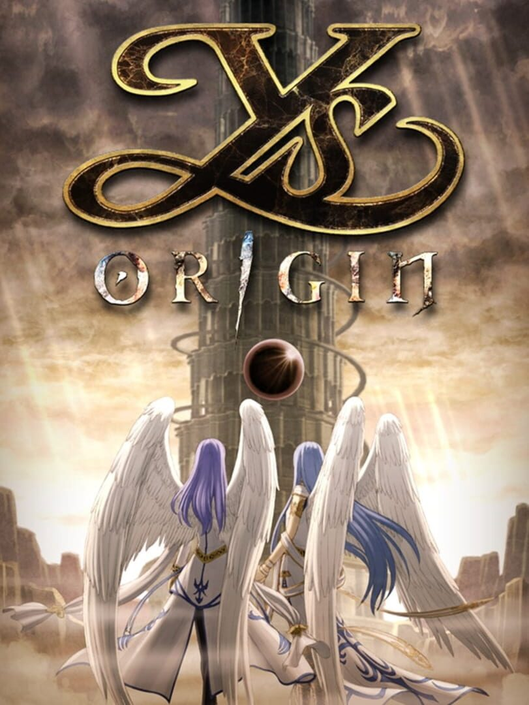

Ys Origin
Ys Origin
Details
|  | |
| Playtime | Not Played |
| Last Activity | Never |
| Added | 12/30/2023 6:40:46 |
| Modified | 12/30/2023 6:45:20 |
| Completion Status | Not Played |
| Library | Steam |
| Source | Steam |
| Platform | PC (Windows) |
| Release Date | 12/21/2006 |
| Community Score | 81 |
| Critic Score | 80 |
| User Score | |
| Genre | Adventure Platform Role-playing (RPG) |
| Developer | Nihon Falcom |
| Publisher | DotEmu Nihon Falcom XSEED Games |
| Feature | Single Player |
| Links | Steam Official Wikipedia Wikia GOG Twitch |
| Tag | |
Description
700 years before the events of Ys I & II, the land of Ys was on the brink of destruction. Demons came in droves and forced the twin Goddesses who ruled the land to whisk their subjects away from the surface, into the safe embrace of the clouds. The demons were persistent, however, erecting a massive tower in pursuit. The battle that raged upon the ground had begun ascending for a second round up above.
One day, amidst this turmoil, the Goddesses stole away into the night, vanishing from Ys altogether. And there's only one place they could have gone: the Devil's Tower.
A search party of knights and sorcerers was hastily formed and dispatched to the surface in hopes of retrieving these runaway deities. Among its members were apprentice knight Yunica Tovah and troubled sorcerer Hugo Fact.
This is their story. Or at least, it's how each of them remembers it.
Expanding upon the gameplay elements introduced in Ys: The Ark of Napishtim and further developed in Ys: The Oath in Felghana, Ys Origin perfects the formula by adding different styles of play and new features never before seen in the Ys universe. Best described as an arcade-like platformer RPG with Metroidvania elements and a complex, multi-faceted narrative, Ys Origin is the perfect mix of action, exploration and story. Screen-filling bosses with complex AI, unique platforming elements, innovative puzzles and a deeply involving mystery await within the wildly varied confines of this classic Ys dungeon.
Come see how long you can last in the Devil's Tower...
One day, amidst this turmoil, the Goddesses stole away into the night, vanishing from Ys altogether. And there's only one place they could have gone: the Devil's Tower.
A search party of knights and sorcerers was hastily formed and dispatched to the surface in hopes of retrieving these runaway deities. Among its members were apprentice knight Yunica Tovah and troubled sorcerer Hugo Fact.
This is their story. Or at least, it's how each of them remembers it.
Expanding upon the gameplay elements introduced in Ys: The Ark of Napishtim and further developed in Ys: The Oath in Felghana, Ys Origin perfects the formula by adding different styles of play and new features never before seen in the Ys universe. Best described as an arcade-like platformer RPG with Metroidvania elements and a complex, multi-faceted narrative, Ys Origin is the perfect mix of action, exploration and story. Screen-filling bosses with complex AI, unique platforming elements, innovative puzzles and a deeply involving mystery await within the wildly varied confines of this classic Ys dungeon.
Come see how long you can last in the Devil's Tower...
Key Features:
- Officially available in English for the very first time.
- Three unique playable characters in story mode, with additional variations (and characters?) unlockable through other modes.
- Five difficulty levels ranging from "Very Easy" for casual players to "Nightmare" for true Ys masters.
- Unlockable "Time Attack" and "Boss Rush" modes for anyone looking to show off his/her boss-taming abilities.
- Unlockable Arena Mode pits players against massive hordes of enemies for unique gameplay rewards.
- Over 40 unique Steam Achievements, Steam Cloud support and hundreds of highly competitive leaderboards.
- Minutely configurable high-resolution graphics with true widescreen support.
- Fully adjustable controls supporting virtually any USB gamepad, as well as a standard keyboard and mouse setup.